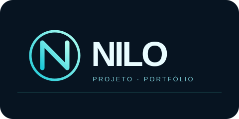

Atendimento e pedidos
Seu WhatsApp exige trabalho repetitivo?
Organize perguntas frequentes, coleta de pedidos e encaminhamento para uma pessoa quando necessário.
Ver o atendimento da ChefLúCONSULTORIA EM INTELIGÊNCIA ARTIFICIAL
Automatize pedidos, documentos e tarefas repetitivas com n8n, Python e agentes de IA integrados aos sistemas da sua empresa. Comece por um processo, com escopo e critérios de entrega definidos.
NOVO APLICATIVO · KAGGRICULTURE
Descubra se chamar um ajudante cabe no caixa e melhora o resultado da colheita. Produção, trabalho, transporte e venda na mesma decisão.
Abrir Colheita no PrazoFazenda fictícia preenchida · números editáveis · sem cadastroUM PROBLEMA POR VEZ
Atendimento e pedidos
Organize perguntas frequentes, coleta de pedidos e encaminhamento para uma pessoa quando necessário.
Ver o atendimento da ChefLúDocumentos e integrações
Avalie a extração de campos de PDFs, as verificações e as conexões entre ferramentas, com tratamento de exceções.
Ver o protótipo documentalKaggriculture · colheita
Experimente uma fazenda fictícia e compare duas rotinas de colheita, considerando disponibilidade e capacidade diária.
Experimentar o planejador de colheita01 / PROCESSOS CONECTADOS
Conectamos ferramentas e processos com n8n, Python, APIs e webhooks. Cada integração começa com um problema concreto da empresa.
02 / INTELIGÊNCIA OPERACIONAL
Assistentes conversacionais e agentes com regras, limites e supervisão. Tecnologia desenhada para apoiar decisões, atendimento e produtividade.
03 / VISÃO DE NEGÓCIO
Unimos automação e análise de negócios para identificar oportunidades. Projetos técnicos documentados, com atuação voltada ao Brasil e Paraguai.
EVIDÊNCIAS E EXPERIÊNCIAS REAIS
Veja as entradas, as etapas e as saídas dos projetos. Cada demonstração identifica seu estágio: operação demonstrada, protótipo ou estudo.
Produto pronto e falta de gente? Compare a equipe atual com um ajudante, respeitando o caixa, o trabalho, o transporte e a capacidade de venda.
Experimentar o aplicativoMotor experimental da Entrega 02 · dados fictícios editáveis
Experiência em automação de atendimento conversacional pelo WhatsApp.
Ver o atendimento funcionandoIdentidade 360°Protótipo agrícola. Experimente o planejamento da colheita com pedidos e canteiros fictícios; conheça também o piloto para avaliar sua operação.
Experimentar o planejador de colheitaConhecer o pilotoVídeo conceitual inicialIdentidade 360°
Protótipo para desafio técnico: recebimento de PDF, extração de campos e verificação de pendências. Aprovações automatizadas eram evolução planejada.
Assistir apresentação narrada
Simulação imobiliária com parâmetros e análise de cenários.
Assistir demonstração técnicaCódigo e documentação
Agente de IA em Python: demonstração de consulta a catálogo com dados fictícios. Identidade visual provisória.
Assistir demonstração do agenteMÉTODO E RESPONSABILIDADE
Diagnóstico, requisitos, proposta, desenvolvimento, testes, implantação controlada, documentação e suporte. Conheça também o Projeto-Piloto Empresarial de IA, com escopo, indicadores e critérios de aceitação.
QUEM CONDUZ SEU PROJETO
Fundador da Ekonomática e responsável pela condução técnica e comercial. Trabalho com automação n8n, Python, APIs, integrações e agentes de IA.
Minha formação em Economia, MBA em Finanças Corporativas e treinamento em Data Science complementam o foco técnico com análise de processos e viabilidade.
Escolhemos um processo, avaliamos os sistemas e definimos o que será entregue, como testar e quem aprova.
Investimento, cronograma, custos de APIs e suporte são combinados na proposta, antes do desenvolvimento.
Ver as condições do pilotoPRÓXIMO PASSO
Fale diretamente com Bernardo. Informe o que faz hoje, quais sistemas usa e o que precisa melhorar. O próximo passo é avaliar o escopo e preparar uma proposta de piloto.
Escopo, investimento e prazo sob proposta. Atendimento remoto. Demonstrações e simulações não comprovam resultados em produção.
GALERIA 3D INTERATIVA
Objetos tridimensionais conceituais com rotação pelo dedo, acompanhados do estágio real de cada projeto e links para evidências.